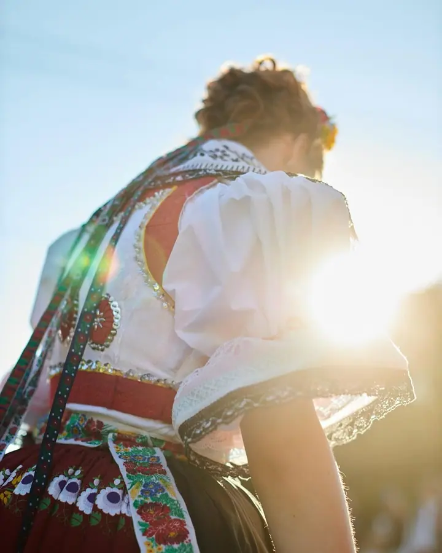
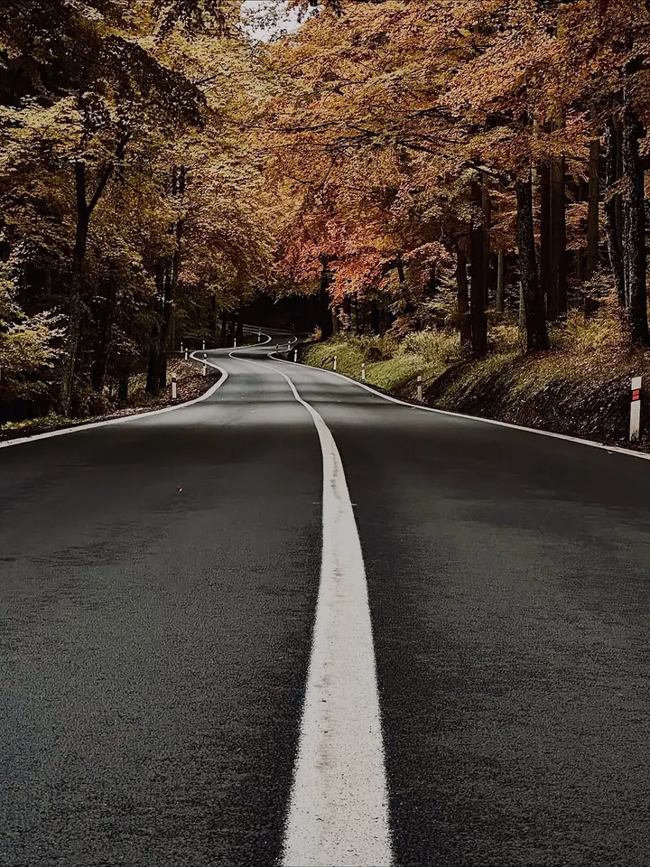

01 / 04
Akce a společenské události
Fotím hody, společenské události, sportovní akce i reportáže. Situace nearanžuji. Pozoruji dění kolem sebe a hledám skutečné momenty, které často trvají jen zlomek sekundy.
Zeptat se na termín→



Příběhy lidí, míst a okamžiků
Zeptat se na termín →(01) Ahoj
Jmenuji se Radek Raus a jsem fotograf na volné noze z jižní Moravy. Fotím akce a hody , svatby, sport, auta i motorky a také architekturu . Nejvíc mě baví dokumentární přístup a skutečné momenty, které trvají jen zlomek sekundy.
90příspěvků s fotkami a příběhy
(02) Co fotím
01 / 04
Fotím hody, společenské události, sportovní akce i reportáže. Situace nearanžuji. Pozoruji dění kolem sebe a hledám skutečné momenty, které často trvají jen zlomek sekundy.
Zeptat se na termín→02 / 04
Motorky a auta jsou mi blízké, sám na motorce často jezdím po cestách. Fotím je venku v krajině i v detailu, stejně jako produkty pro vaši prezentaci.
Zeptat se na termín→03 / 04
Fotím stavby, domy i místa tak, aby vynikl jejich charakter a příběh. Hodí se pro prezentaci architektury i nabídku nemovitosti.
Zeptat se na termín→Dále nabízím
Svatební den fotím dokumentárně a bez umělých situací. Jde mi o skutečnou atmosféru, emoce a detaily, které budou dávat smysl i po letech.
↗(04) Postup
Od první zprávy po hotovou galerii.
Krok 1 z 4
Pošlete mi pár řádků o tom, co potřebujete nafotit: akci, svatbu, auto, produkt nebo stavbu. Stačí termín, místo a pár slov o tom, co od fotek čekáte.
Krok 2 z 4
Projdeme spolu, jak bude focení probíhat, co je pro vás důležité a na které momenty nebo detaily se zaměřit.
Krok 3 z 4
Na místě pracuji nenápadně a dokumentárně. Nic nearanžuji, pozoruji a čekám na chvíle, které se opravdu dějí.
Krok 4 z 4
Z focení vyberu nejlepší snímky, upravím je a předám vám je hotové, připravené k tisku i na web.

Nejlepší fotky vznikají ve správný okamžik na správném místě.
(05) Za objektivem
Fotografii se věnuji jako způsobu, jak zachytit příběhy lidí, míst a okamžiků. Nejvíc mě baví dokumentární přístup: pozorovat dění kolem sebe a hledat autentické momenty, které často trvají jen zlomek sekundy.
Fotím svatby, společenské akce, sport i architekturu. Přestože jde o rozdílné obory, spojuje je pro mě jedna věc: každý má svůj jedinečný příběh. Nesnažím se vytvářet umělé situace. Chci zachytit skutečnou atmosféru, emoce a detaily, které dávají fotkám smysl i po letech.
Když zrovna nefotím, často mě najdete na motorce někde na cestách. Cestování mě naučilo objevovat nová místa a dívat se na věci z různých úhlů. Stejný přístup si přináším i do své fotografické práce.
Radek
Radek Raus · Fotograf akcí, svateb a auto/moto
Akce a společenské události, svatby, sport, auta a motorky, produkty, cestování a architekturu nebo reality. Pokud si nejste jistí, jestli se vaše zakázka hodí, klidně se zeptejte.
Bydlím na jižní Moravě, takže tady fotím nejčastěji. O focení jinde se mi ozvěte a domluvíme se.
Jen minimálně. Fotím dokumentárně, nesnažím se vytvářet umělé situace a soustředím se na skutečnou atmosféru, emoce a detaily.
Cena záleží na typu a rozsahu focení. Napište mi, co plánujete, a pošlu vám nabídku na míru.
(07) Kontakt
Napište pár vět o tom, co si představujete, a termín, který se vám hodí.
radek@radekraus.com